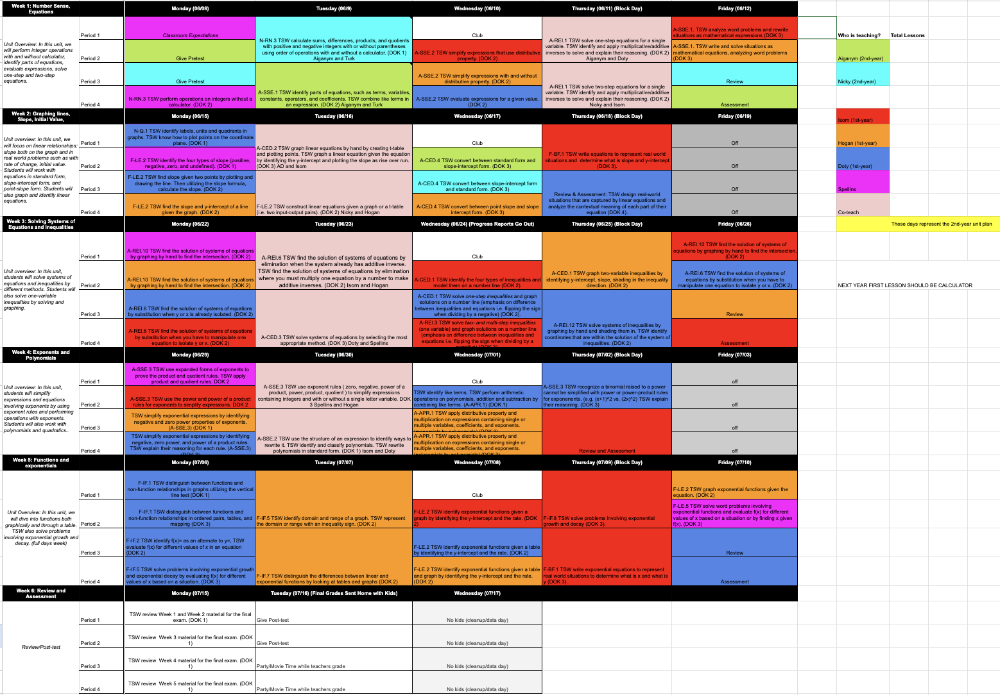
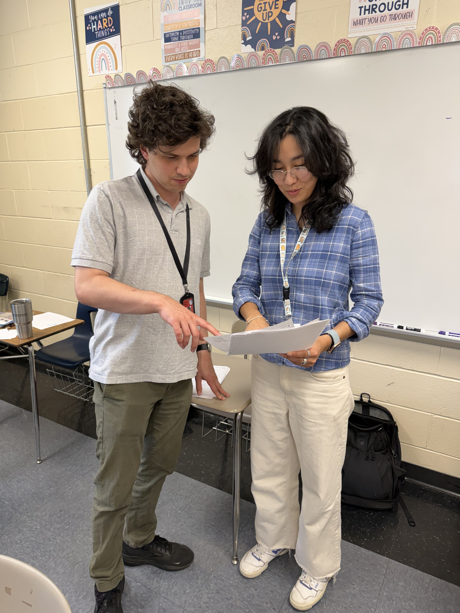
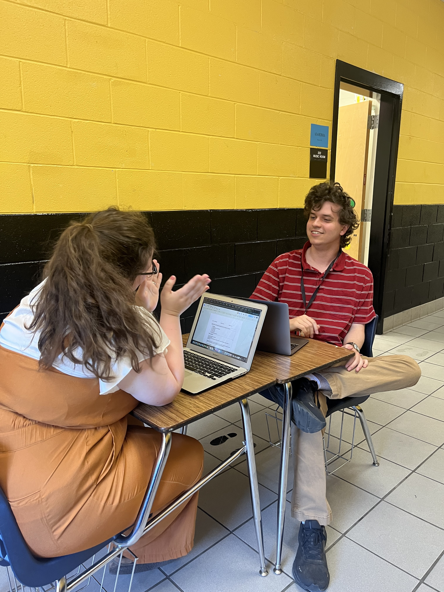

My peers at Mississippi Teacher Corps have pushed me in directions I had not forseen as a teacher and made me consider new paths towards growth in my learning and my teaching. I was lucky to work in the algebra room at Holly Springs Summer School alongside some fantastic mentors and peer who pushed me to try teaching outside of my comfort zone. This program is full of insightful collaborators, who have taught me to effectively slow down and consider things from the students' perspectives. I'm not always the most empathetic person, but seeing them interact with the kids and design lessons on their level pushed me to do the same. My peers in the teacher corps always have a strong spirit, and seeing their dedication reignites my own.

My coworkers at Byhalia Middle School have helped me immensely from tracking student data, collaborating on management, and professional development sessions. I work closely with both the 5th grade team and the math department. The math department frequently meets to discuss data and adjustments to instruction so that we can share ideas on effective strategies for helping struggling students. The 5th grade team meets to discuss management and to keep an eye on behavioral issues that we see arising among the students. We collaborate on a grade-level consequence ladder and we hold parent-teacher conferences as a team. The other teachers on the grade level team have been incredibly helpful for managing students who I would have otherwise struggled with.

From Mississippi Teacher Corps to Byhalia Middle School, I consider just about everyone who I've worked with to be my mentor. That said, there are some people who stepped up in a serious way on that front. My lead teacher in summer school, Mrs. Spellins, was the first teacher mentor I ever had, and one of the biggest inspirations for how I manage my classroom and approach student learning. I've also had the opportunity to work closely with some of my administrators at BMS and receiving feedback from and even coteaching with them. The administration at my school has been endlessly supportive, and I owe them a great deal of thanks for the teacher I have become.